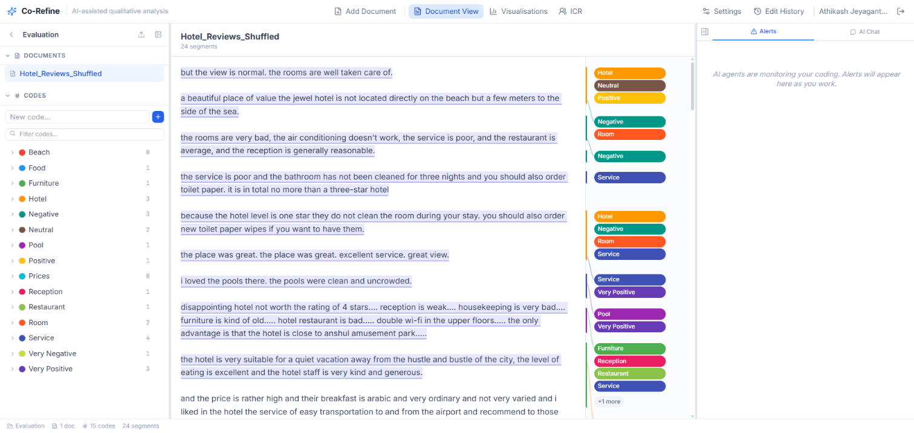

Co-Refine: AI-Powered Tool Supporting Qualitative Analysis

(opens in new tab)
Venue. arxiv (2026)
Materials.
DOI(opens in new tab)
Abstract. Qualitative coding relies on a researcher's application of codes to textual data. As coding proceeds across large datasets, interpretations of codes often shift (temporal drift), reducing the credibility of the analysis. Existing Computer-Assisted Qualitative Data Analysis (CAQDAS) tools provide support for data management but offer no workflow for real-time detection of these drifts. We present Co-Refine, an AI-augmented qualitative coding platform that delivers continuous, grounded feedback on coding consistency without disrupting the researcher's workflow. The system employs a three-stage audit pipeline: Stage 1 computes deterministic embedding-based metrics for mathematical consistency; Stage 2 grounds LLM verdicts within of the deterministic scores; and Stage 3 produces code definitions from previous patterns to create a deepening feedback loop. Co-Refine demonstrates that deterministic scoring can effectively constrain LLM outputs to produce reliable, real-time audit signals for qualitative analysis.
Link to this page: